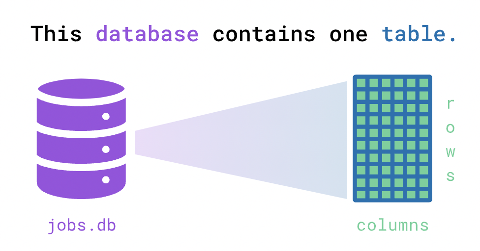
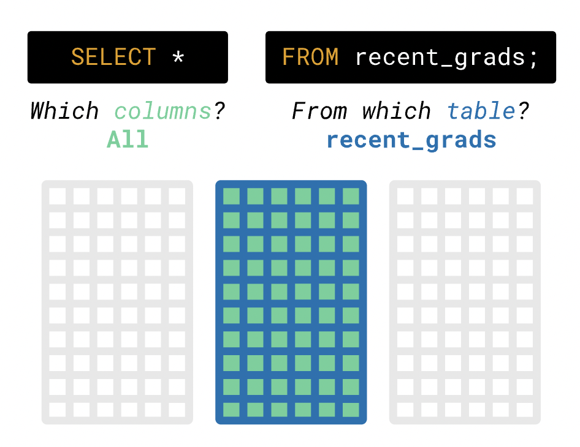

Update
- Group is formed
- Review the previous lecture (intro to data cleaning) seriously
- homework will assist you accordingly
Today: Fundamental of Database
Structured Query Language, SQL
- One of the most popular technologies used by data professionals
- Understanding the fundamentals of a more general-purpose language like Python or R is critical for working with data
- but knowing SQL helps data professionals do more with their data
A few takeaways
- SQL enables us to pull data from many sources
- data is distributed across many sources
- allows us to structure our data in a way that makes it accessible from one place
- SQL data is structured into multiple, connected tables
- Let's learn about the language itself and how you can use it to query data
- Discuss why we need to learn this
Database
- When we work with data, we load the data from files like spreadsheets
- We may run into problems:
- What if the data is too big to fit into a single spreadsheet file?
- What if you share the data with team members and keep it updated?
- What if there's sensitive information in your data that needs protection?
- Thankfully, these problems already have a solution: the database
- A database can store much more data more securely than a spreadsheet or a text file
- Unlike simply opening a spreadsheet, we actually have to ask for data from the database
- We primarily interact with a database using a database management system (DBMS)
- a computer program to help users interact with data by giving the computer instructions through the DBMS
- We'll begin learning SQL with the DBMS SQLite

- Explore data from the American Community Survey on job outcome that we loaded into a SQL database
- a database, jobs.db, loaded with this data into a single table named recent_grads
- Consider the SQL instruction (usually called a query)
SELECT * FROM recent_grads;
This query selects all columns from the recent_grads table
To run the query above in our interface, type the following code in the R script
library(RSQLite)
setwd("set your working directory")
con <- dbConnect(SQLite(), 'jobs.db')
dbListTables(con)
dbGetQuery(con, 'SELECT * FROM recent_grads')
This will run the query against the database, display the results, and give feedback on your answer
- The process you used to visualize recent_grads breaks down into two steps:
- Write a SQL query that expresses the request "fetch all the data in the table."
- Ask the SQLite DBMS software to run the code and display the results
dbGetQuery(con, 'SELECT * FROM recent_grads;')
- SELECT * — the symbol * selects all the columns
- The table we wanted to query using FROM recent_grads
The order and space are crucial features of SQL syntax

- You may have noticed that SELECT and FROM use uppercase letters, but not required
- Also, not sensitive to the line change and indentation
- Confirm that lines changes, capitalization, and indentation aren't crucial for the query to run
- In practice, you will often need to access a database without any documentation
- In this situation, you'll have to rely on the surrounding context of the database and on your own exploration
- Num of SAT Test Takers
- SAT Critical Reading Avg. Score
- SAT Math Avg. Score
- SAT Writing Avg. Score
- Add the sum of scores of SAT and save it to sat_results
- Address some structures
- Which information do we need for our analysis?
- Do we need to create any new variables?
- Are the data the correct type?
- Apply the same techniques to ap_2010
- DBN is the same as in the other datasets
- AP Test Takers provides information about the number of students who took one AP exam
- Total Exams Taken tells us how many exams students took at the school
- The last tells us how many students earned high scores on the exams, which range on a scale from one (lowest) to five (highest)
- Let's interpret the following code:
ap_2010 <- ap_2010 %>%
mutate(across(3:5, as.numeric)) %>%
mutate(exams_per_student = `Total Exams Taken` / `AP Test Takers`) %>%
mutate(high_score_percent = (`Number of Exams with scores 3 4 or 5` / `Total Exams Taken`) * 100)
- Now look at class_size DataFrame to identify data cleaning needs
- contains information about class sizes associated with different grades and classes of NYC schools
- It may be useful in our analysis of how demographic factors can affect student academic performance
- Let's start cleaning the class_size DataFrame by removing unnecessary rows for our analysis
- Filter the class_size DataFrame to retain only rows where GRADE values are equal to "09-12" and PROGRAM TYPE values are "GEN ED"
- Look at class_size data
- still contains multiple rows for some high schools
- each row represents a specific course
- Create a new class_size DataFrame that contains the following
- The variables from the original DataFrame:
- CSD, SCHOOL CODE, SCHOOL NAME
- The following new variables:
- avg_class_size
- avg_largest_class
- avg_smallest_class
- We have three DataFrames left to work on
- Let's look at the graduation DataFrame, and interpret the following:
graduation <- graduation %>%
filter(Cohort == "2006" & Demographic == "Total Cohort") %>%
select(DBN, `School Name`, `Total Grads - % of cohort`,
`Dropped Out - % of cohort`)
- Now, look at the demographics DataFrame next
- this one also has multiple rows for each school
- data from elementary schools, as well as high schools, is in demographics
- Create a new demographics DataFrame
- Filter the rows
- values of schoolyear are the most recent
- values of grade9 are not "NA"
- Select
- DBN, Name, total_enrollment
- frl_percent, ell_percent, sped_percent, asian_per, black_per, hispanic_per, white_per, male_per, female_per
demographics <- demographics %>%
filter(schoolyear == "20112012" & !is.na(grade9)) %>%
select(DBN, Name, contains("_per"), total_enrollment)
demographics_clean <- demographics %>%
select(-female_per)
hs_directory <- hs_directory %>%
select(dbn, school_name, `Location 1`) %>%
rename(DBN = dbn)